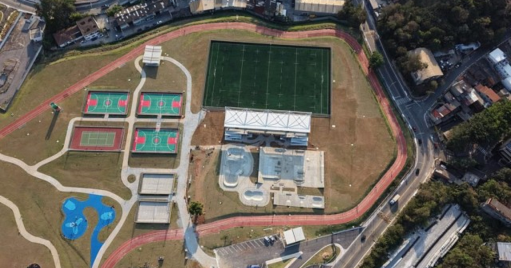
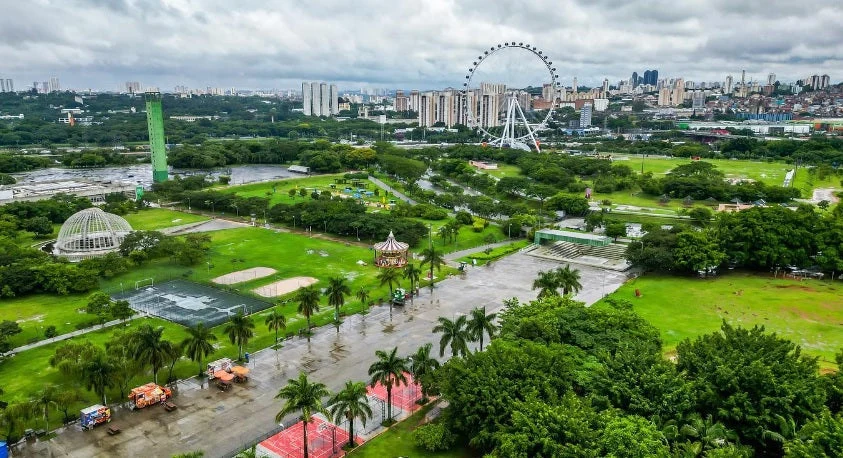
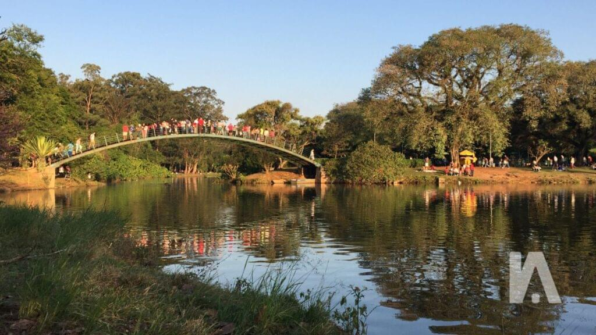
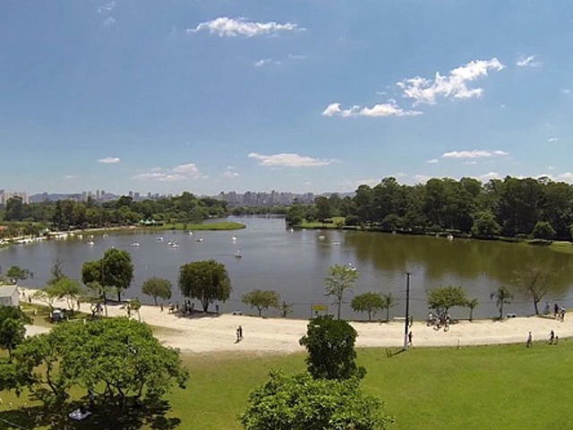

Parque Municipal Dom José
Um movimentado centro esportivo e recreativo da cidade com lago, pedalinhos, trilhas e área infantil, um espaço perfeito para relaxar e se divertir com os amigos.
📍 Barueri • GratuitoEspaços verdes com pista de skate, área de descanso e gente pra conhecer. Ideal pra andar, sentar na grama ou só tomar um ar sem depender de tela.
Um movimentado centro esportivo e recreativo da cidade com lago, pedalinhos, trilhas e área infantil, um espaço perfeito para relaxar e se divertir com os amigos.
📍 Barueri • Gratuito
é um moderno complexo que une lazer, esporte e cultura em amplas áreas verdes planejadas para a convivência da comunidade, o lugar perfeito para jogar e praticar diversos esportes pela sua quantidade de quadras.
📍 Barueri • Gratuito
Um espaço verde com áreas de recreação, pista de skate e infraestrutura para atividades esportivas, ideal para fazer quaisquer tipo de atividades, seja um piquenique, andar de bike, ou simplesmente desfrutar da natureza.
📍 São Paulo • Gratuito
O Parque Ibirapuera é o principal "cartão-postal" verde e cultural de São Paulo, famoso por seus grandes gramados e pavilhões. Ele reúne áreas de lazer, pistas de caminhada e museus importantes. Um ótimo lugar para se reunir com amigos e desfrutar da natureza.
📍 São Paulo • Gratuito
É uma grande área de preservação ambiental e lazer localizada na região metropolitana de São Paulo, com núcleos que oferecem trilhas, lagos e contato direto com a fauna nativa. O local é ideal para caminhadas, piqueniques e atividades esportivas em meio à natureza.
📍 São Paulo • Gratuito